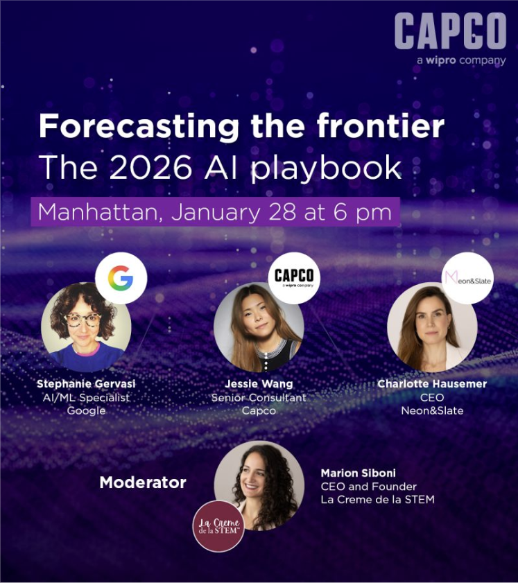
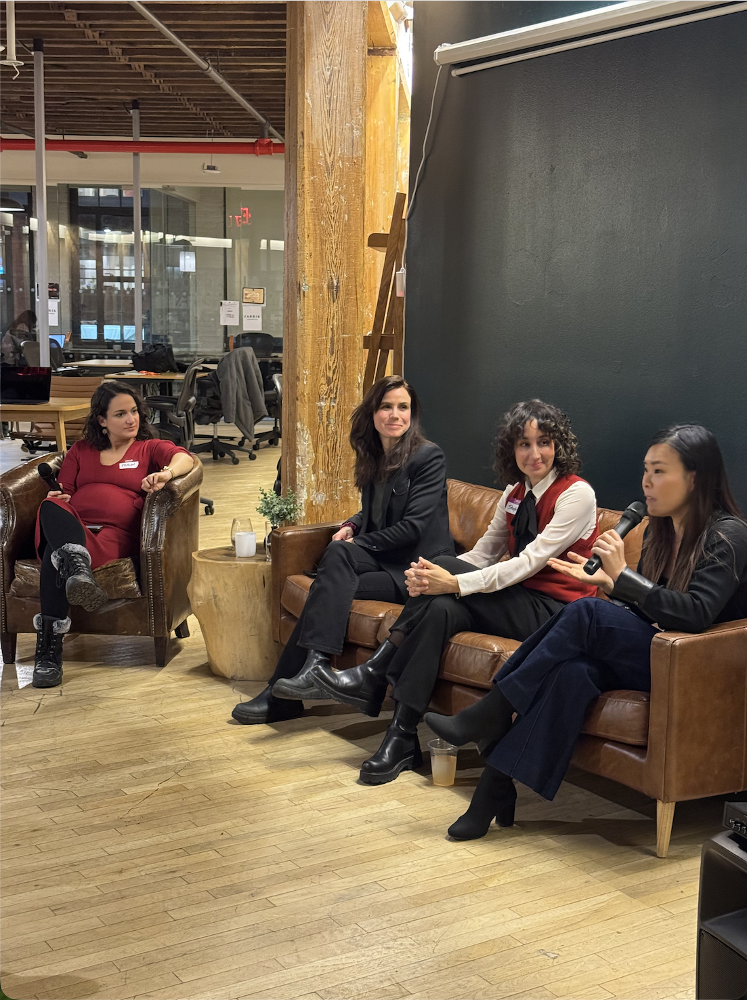

From AI Product Owner to the Leader People Come to for Solutions
In just over one year at Capco, Jessie grew from an AI intake consultant into the go-to leader for enterprise AI product strategy, commercial growth, team building, and global enablement — someone people trust, follow, and turn to when they need answers.
A year of relentless growth — building trust, scaling teams, driving revenue, and becoming the person people come to when they need a solution.
Started at Capco as an AI Product Owner, ready to make an impact from day one.
Designed the AI intake process from scratch, led use-case guided discovery sessions, and built AI solution prototype documentation. Quickly became the person the team relied on to turn ambiguous AI requests into structured, actionable plans.
Identified a gap in how AI work was being showcased internally and created the US GenAI Demo Day (bi-weekly). What started as a technical forum quickly evolved into an internal sales tool — converting demo assets into repeatable, sales-ready collateral.
Within a couple of months, the US Demo Day scaled into a Global Demo Day — coordinating across UK, Canada, Tax, Switzerland/Germany, Singapore, and India.
Lab membership doubled as demand surged, requiring new governance, guidelines, and onboarding processes that Jessie helped establish.
The GenAI Lab grew to 3× its original size (15 → 62 members, 28 active standup). Jessie co-created the "How to Join the AI Lab" guideline with HR and helped conduct behavioral interviews for the APT programme to vet candidates.
Stepped up as AI Product Lead on the US side for the Global AI Lab, running critical operating forums and governance alongside senior leadership. Became the reliable leader teams turned to for direction and problem-solving.
Promoted from intake consultant to full Product Lead for Jefferies' AI platform. Now owning the roadmap, stakeholder management across C-level and ED-level, and leading a team of ~26 engineers to build and deliver AI solutions to the client.
Began identifying commercial opportunities within Jefferies, supporting GTM & RFP efforts, and staying deeply curious about the sales pipeline — understanding which clients, which solutions, and what the revenue picture looks like for the AI team.
Stepped in to support the Canada team for RFP and Demo preparation, getting them up to speed on AI capabilities and helping position Capco's AI story for new pursuits.
Started building Capco's first AI Product Owner/Product Manager group (1 → 4 members), establishing training and onboarding so juniors can run delivery autonomously.
Invited as a panelist at a high-profile external panel in Manhattan alongside Google and Neon&Slate — representing Capco on the global AI stage.
Invited 4+ times to speak as AI product lead and expert on Jefferies AI Ambassadors calls, providing insights, showcasing AI capabilities, and delivering tailored solutions for enterprise-wide and department-specific AI platforms.
Appointed as deputy for an MP-level leader overseeing the entire Jefferies AI programme — a recognition of trusted delivery leadership and the ability to operate at programme scale.
Launched an official AI × Cyber collaboration with the Cyber team, bridging two critical domains to productise marketable AI security solutions.
Invited to join the AI Infusion Lunch & Learn initiative — a Capco-wide programme that serves all clients — as an AI expert trainer, teaching teams how to leverage AI effectively.
Working directly with the COO to kick off a firm-wide AI enablement initiative — an educational programme encouraging domains to submit AI use cases through a strategy of forward engineering to accelerate how AI solutions get built and deployed.
Not just delivering AI products — but building teams, driving revenue, shaping strategy, and becoming the leader people rely on.
From designing the intake process to owning the full product roadmap and leading a team of ~26 engineers to build and deliver AI solutions to Jefferies. Appointed as deputy for an MP-level leader overseeing the entire Jefferies AI programme. Beyond product, Jessie stayed deeply curious about the commercial side — understanding which clients Capco serves, which solutions got sold, and what the AI revenue pipeline looks like.
Led the operational transformation of the US GenAI Lab through its most significant growth period — and became a senior leader people look to for direction.
Founded the US Demo Day and scaled it globally within months — turning a tech forum into a commercial engine.
Founded Capco's first dedicated AI Product Owner / Product Manager group from the ground up — grooming juniors into autonomous delivery leads.
Bridging domains and working at the executive level to shape how Capco thinks about AI.
External speaking, internal enablement, and growing the next generation of AI talent — the leader people come to for answers.
Jessie splits her time across three strategic priorities that drive Capco's AI capability forward.
Building the governance, culture, and operational muscle to grow a high-performing AI lab from 15 to 62+ members — with the systems to keep everyone productive and aligned.
Driving product strategy and delivery for enterprise AI platforms like JefAI — from roadmap creation to C-level stakeholder management and hands-on programme execution.
Creating the internal tools, demos, training, and thought leadership that accelerate Capco's AI pursuits and empower teams across domains to deliver AI value.
Beyond delivery — direct contributions to Capco's commercial success and market positioning.
Converted Jefferies from an initial AI intake/proof phase into a year-long product engagement, directly supporting continued revenue on the account.
By leading the JefAI roadmap and enterprise product direction, creating scope for additional AI platform work and future solution expansion at Jefferies.
Turned AI demos and storytelling into repeatable, market-facing assets that support pursuits, stakeholder buy-in, and downstream sales opportunities.
External thought leadership and Global Demo Day fuel pursuit conversations, brand credibility, and new pipeline opportunities for Capco in GenAI.
Building community, mentoring talent, and representing Capco on the global stage.
Jessie represented Capco at a high-profile external panel on enterprise GenAI adoption, sharing perspectives alongside Stephanie Gervasi, PhD (Google), Charlotte Hausemer (Neon&Slate), moderated by Marion Siboni (La Crème de la STEM).


"I will forever mark 01/28/2026 as my first real step into 'doing more.' More than just responsibility. More than just work. More contribution, more community, more connection." — Jessie Wang
Expanding JefAI from a roadmap-led platform into a broader enterprise AI product ecosystem — scaling adoption and solution maturity.
Becoming the AI lead across the broader Jefferies AI programme, overseeing multiple AI workstreams built from the ground up.
Deepening the Jefferies platform opportunity, expanding account revenue, and building reusable AI assets that drive new commercial conversations.
Every leader has a vision beyond the office. Here's Jessie's.
Where precision meets community.
Beyond the world of AI product leadership, Jessie has a bigger dream — to build an archery range with an embedded boba tea lounge. Not just for fun (though it would be), but as a purpose-built space for connection:
Bringing Capco teams together through archery workshops and boba — building trust, focus, and camaraderie beyond the conference room.
Hosting clients for memorable experiences that deepen relationships — because the best business conversations happen when people are having fun.
The same mindset that drives Jessie's leadership — aim with precision, bring people together, and create something people love coming back to.